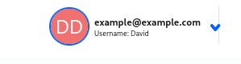
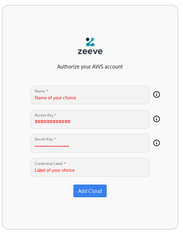

Cloud Authorizations¶
Zeeve allows you to authorize multiple cloud accounts of yours so as to create networks in the cloud of your choice. You may choose to deploy some nodes of network on one cloud and extend some nodes of the same on another. This cross cloud deployment maybe a major requirement for your usecase or clients especially for creating/expanding consortiums.
Zeeve supports a list of cloud for you to choose from. You can authorize multiple clouds and choose between them at the time of creating networks or nodes. Following is the list of currently supported clouds:-
AWS
Azure
Digital Ocean
IBM Cloud
INTERESTING FACT: Zeeve doesn’t use blockchain services of any of the supported cloud platforms, and hence is not restricted for the level of features it can provide for a protocol on any cloud.
AWS Authorization¶
Before you authorize your AWS account with Zeeve, you’ll need following permissions to deploy a network:
Permission to create VPC, Elastic Ips, EC2 instance, Security group, Internet gateway and Route tables.
For Fabric, you need additional permissions to read/write EKS, CloudFormation and to create and pass any Role in IAM.
To authorize your AWS account on Zeeve:-
Hover on profile

Click on Edit Profile

Click on your cloud authentication for AWS account, click on Authorize Aws.

You will need AWS Access Key and AWS Access Secret Key, to authenticate your AWS account with Zeeve.

Azure Authorization¶
To authorize your Azure account on Zeeve you’ll need to ensure certain things:-
User must have an account with Global Admin Role
Source should be an azure Active Directory
Login from this account in Azure portal(if hasn’t been logged before)
User must have enough permissions to write Subscription Id, create Resource group and to add any Enterprise Application into Azure Active Directory.
After ensuring these, follow the given steps:-
Hover on profile
Click on Edit Profile
Click on your cloud authentication for Azure account, click on Authorize Azure.
Authorize Azure will redirect you to Microsoft Azure login page, you can login with your Microsoft credentials, once login is successful, Zeeve will be connected to your Azure account.

Digital Ocean Authorization¶
To authorize your Digital Ocean account on Zeeve you’ll need to ensure certain things:-
User must have an account with global admin role
Source should be an azure active directory
Login from this account in Azure portal(if hasn’t been logged before)
User must have enough permissions to write subscription Id
After which on Zeeve do following steps:-
Hover on profile
Click on Edit Profile
Click on your cloud authentication for Azure account, click on Authorize Azure.
Authorize Azure will redirect you to Microsoft Azure login page, you can login with your Microsoft credentials, once login is successful, Zeeve will be connected to your Azure account.
IBM Cloud Authorization¶
To authorize your IBM account on Zeeve you’ll need to ensure certain things:-
User must have an account with global admin role
Source should be an azure active directory
Login from this account in Azure portal(if hasn’t been logged before)
User must have enough permissions to write subscription Id
After which on Zeeve do following steps:-
Hover on profile
Click on Edit Profile
Click on your cloud authentication for Azure account, click on Authorize Azure.
Authorize Azure will redirect you to Microsoft Azure login page, you can login with your Microsoft credentials, once login is successful, Zeeve will be connected to your Azure account.